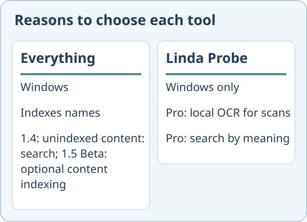

Linda Probe vs Everything
Everything focuses on filename search; version 1.4 supports unindexed content: searches, and 1.5 Beta offers optional content indexing. Probe also searches inside documents. If you remember a filename, Everything may be all you need. This comparison relies on the competitor’s public site as of 30 October 2026.
Choose Everything if
Everything focuses on fast filename search on Windows. Version 1.4 also supports unindexed content: searches. Everything 1.5 Beta can optionally index file contents.
Choose Linda Probe if
You want to search document contents, inspect previews and add manual tags. These are in Probe Free. For scanned PDFs or a document whose subject you remember, Probe Pro adds local OCR and search by meaning. That is a reason to consider Probe, not a measured speed advantage.

What Linda Probe does not offer
It is closed source and runs only on Windows 10 and 11. The free edition covers file names and exact words only. OCR and meaning-based search require Probe Pro, unlocked with a paid or gift licence key. The installer is not code-signed yet, so Windows SmartScreen may warn. OCR can make mistakes on poor scans and handwriting.

Price
Linda Probe Free is for personal, non-commercial use. Probe Pro Personal costs USD 10 once for one named user on up to 3 devices; Team costs USD 30 once for up to 10 named users on 20 devices. These cover the purchased version and fixes; future major versions or models may require payment. Organization costs USD 500 per year for one organization at one site on up to 200 devices and renews automatically until cancelled. Taxes and the final total appear before payment. Personal and Team include a full refund on request within 14 days.
Everything is freeware, according to its FAQ.
We could not confirm local scan OCR or search by meaning in the Everything pages linked below. This is not a claim that those features can never be added.
Official sources read for this comparison: Everything FAQ · Everything · Everything 1.5 Beta: content indexing.